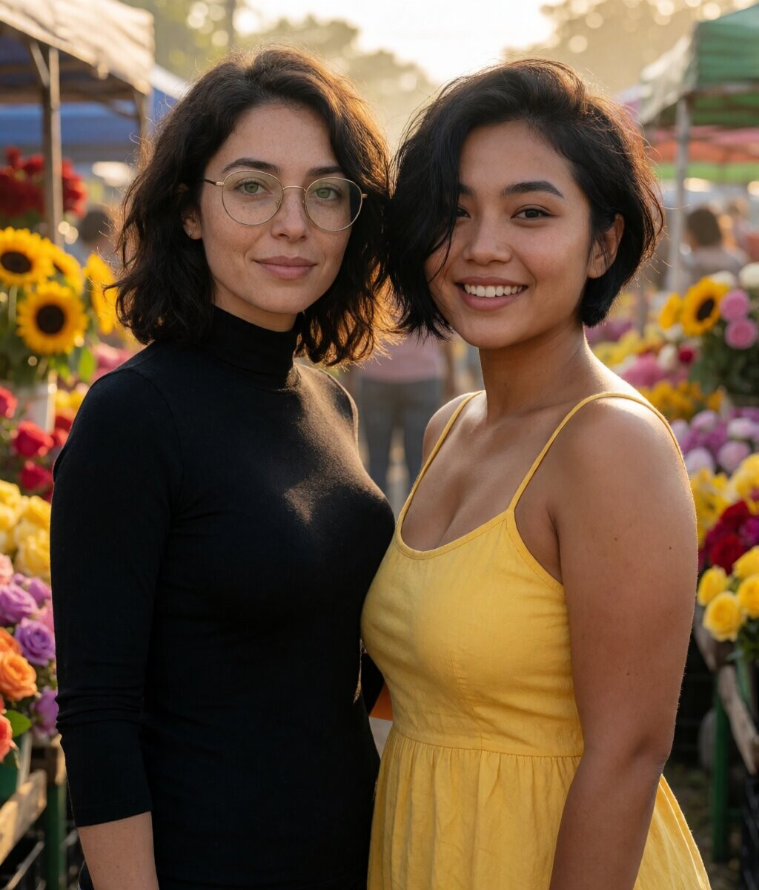
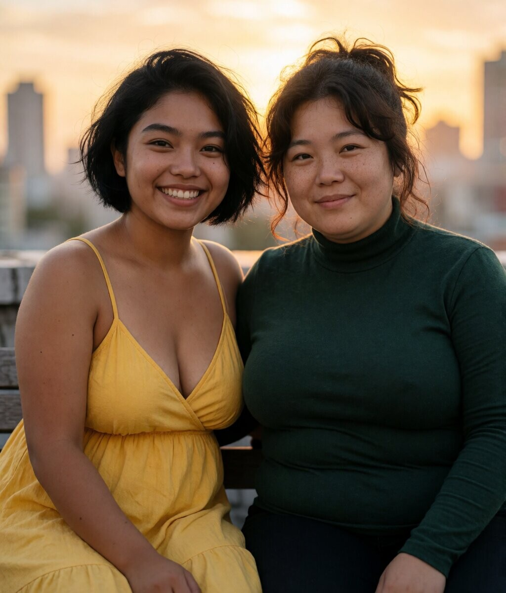
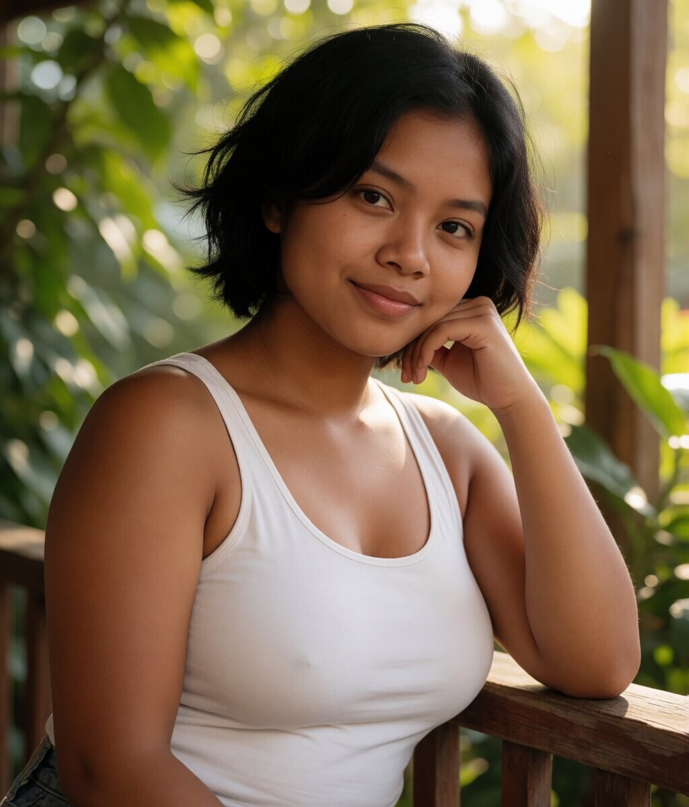
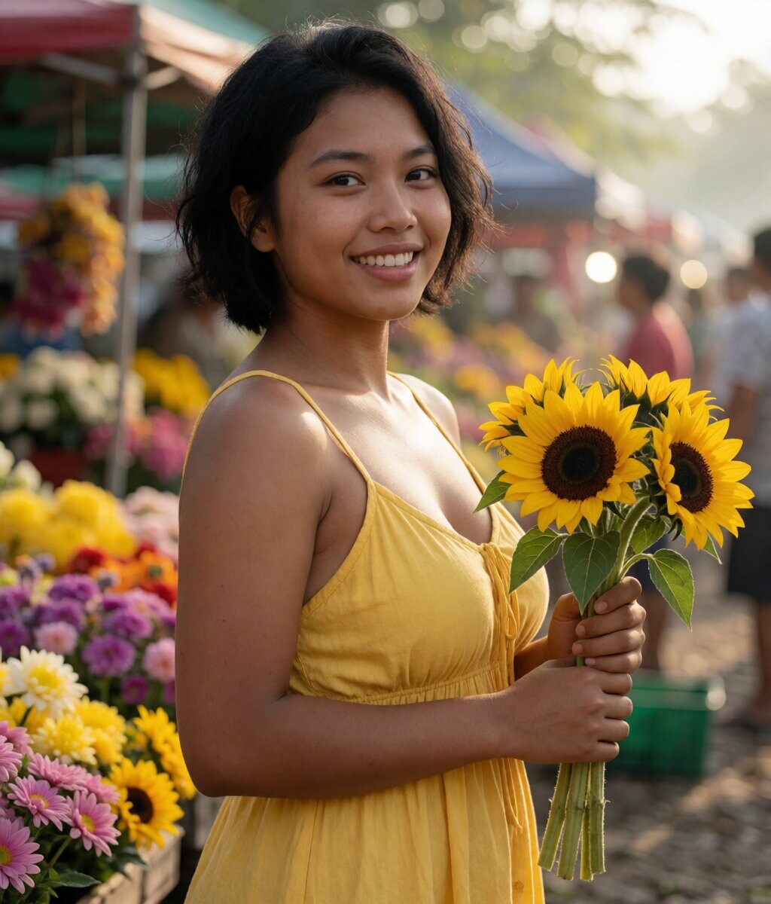
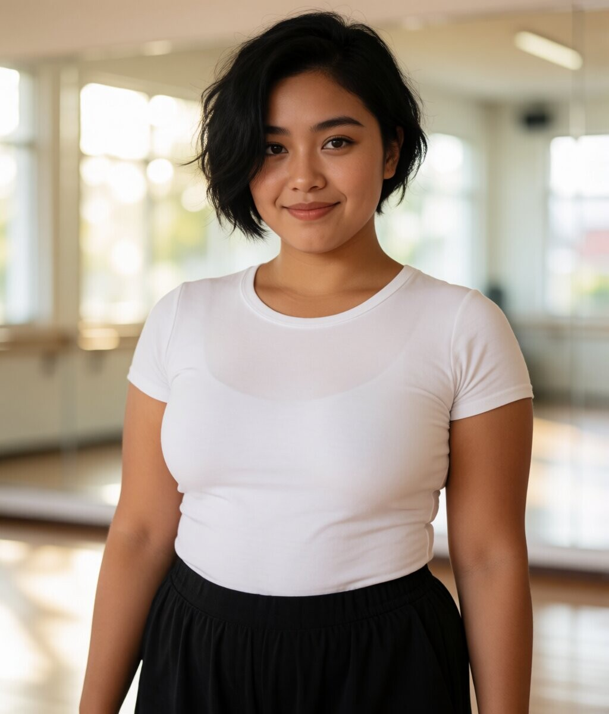
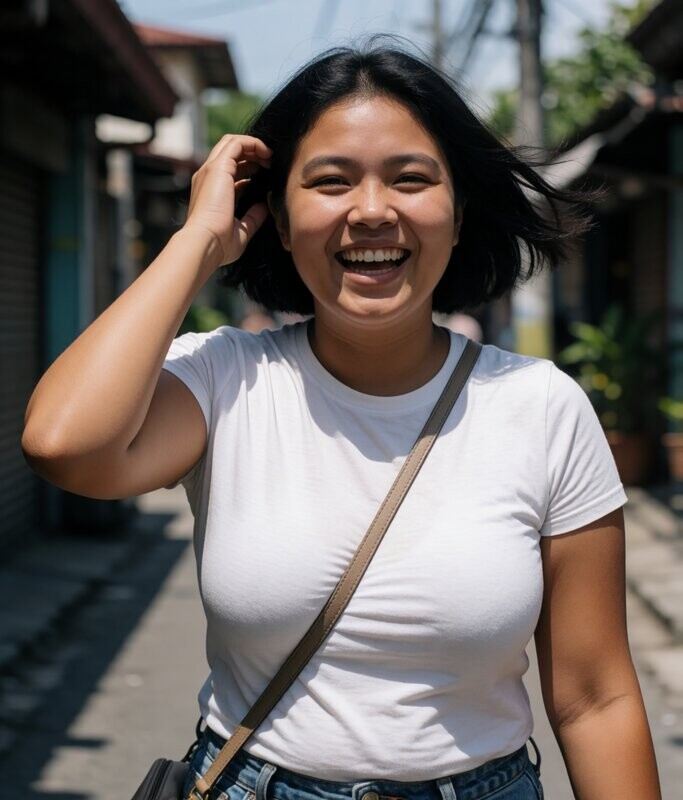

Duos — 5 octobre
Maïa avec Layla, Zineb et Suyin.

Avec Layla

Avec Zineb

Avec Suyin
Showcase — 5 octobre
Maïa dans deux ambiances : véranda et marché aux fleurs.

Véranda

Marché, tournesols

Studio, danse
Intime — 5 octobre
Cuisine la nuit, robe d'été sur le balcon. Playful, naturel.
Cuisine, nuit
Balcon, robe
Références validées — jour 13
Trois essais, trois lumières. Le visage reste jeune, la poitrine pleine, la peau lisse. L'ancre : pas de grain, pas de pores, juste la lumière.
Cuisine, matin
Marches, après-midi
Table, lampe chaude
Variations — jour 13
Même fille, autres contextes. Terrasse au coucher, canapé en après-midi, rue en plein midi.
Terrasse, golden hour
Canapé, après-midi

Rue, plein midi
Nouvelle série — jour 13
Trois lumières, même visage. Fenêtre au matin, toit l'après-midi, couloir à la lampe.
Fenêtre, matin
Toit, après-midi
Couloir, lampe